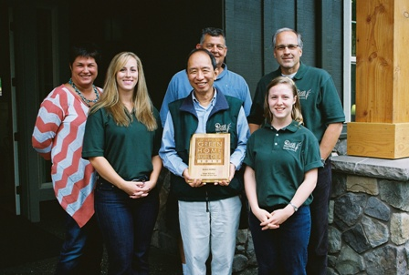
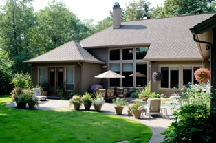

Quail Homes - 2012 Green Builder of the Year by Earth Advantage Institute
Why Build New with Quail Homes?
In the midst of the current real estate market, buyers have many options when looking at purchasing a home, especially when short sales and bank owned properties are flooding the market. The wise buyers are choosing new construction as the most affordable, long-term solution when looking for their next home. There are, in fact, many benefits to buying a new home rather than an existing home.
Overall Cost & Energy Efficiency
One common misconception about purchasing new construction is price. Uninformed buyers easily fall into the trap of believing new construction is simply out of their financial reach. A quality real estate agent with new construction experience and knowledge will educate their clients correctly. The top agents show their clients an apples-to-apples comparison and results often show new construction pricing is quite comparable, if not lower overall.
Quail Homes has embraced green building techniques and has become a local leader in green home building. All Quail homes are built to a minimum standard of EARTH ADVANTAGE PLATINUM, the highest standard available. Quail Homes are high performing, low maintenance and cost effective in their energy use. Dare to compare the costs involved to retrofit an existing home to these standards.
In addition to purchase price and maintenance cost considerations, property taxes also need to be taken into account. Taxes on a new home are significantly lower in the first 12-to-24 months than those of a resale home of similar value.
Another item to consider when weighing new construction costs against resale – if you aren’t buying the home you really want, are you really getting a good buy?
Functional Living Without Compromise
When looking at pre-existing homes, it’s often difficult, if not impossible, to find all the functions and features that will make that house feel like the comfortable home you desire. Many homes on the market today have features that are now considered obsolete, such as having all bedrooms on the 2nd floor, having to walk through a formal space to enter a garage or bedroom, or having inadequate or unattractive exterior entrances with stairs.
Jon Girod, owner of Quail Homes, has been recognized for his achievements in design, innovation, and architecture. As a hands-on builder, he has the ability and experience to deliver the functionality his clients require while keeping the home’s style and energy efficiency intact.
Quail Homes features Mascord home plans, and offers free design services to customize any plan to fit the client’s needs and specifications. When building new construction with Quail Homes, you are getting exactly the home you want.
Making Your Home Your Own Without Worry

One of the most comforting draws to new construction is knowing that you aren’t purchasing someone else’s problems. Not only do you have the satisfaction of choosing your own features, colors, and finishes, you can be secure in the fact that the home is free from allergens and other hidden problems left behind by the previous owner. Also, there will not be unexpected or hidden costly repairs to contend with.
Homeowners know that if something can go wrong, it will, and often at the most inconvenient time. In homes even 8-to-10 years old, it is possible to have furnaces, water pipes, dishwashers, or garage door openers needing costly repairs.
When purchasing new construction with Quail Homes, customers know exactly what high quality craftsmanship, materials, and appliances they are getting. Worry-free living and deferred maintenance are huge advantages that building new has over pre-existing homes.